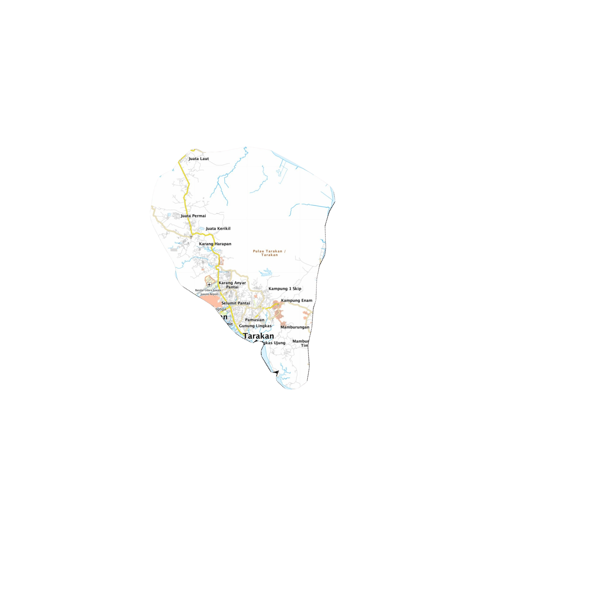

Harga rata-rata komoditas hari ini di Tarakan
Harga dibandingkan dengan hari sebelumnya 15 Sep 2026
Peta harga komoditas hari ini di Tarakan
Harga komoditas yang dipilih akan dibandingkan dengan hari sebelumnya 15 Sep 2026

Informasi Peraturan dan Harga Eceran Tertinggi (HET)
Berikut adalah daftar komoditas pangan yang memiliki peraturan resmi beserta Harga Eceran Tertinggi (HET) yang berlaku.
| NAMA KOMODITAS | HARGA ECERAN TERTINGGI | PERATURAN |
|---|